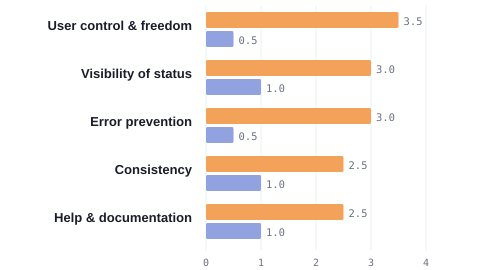
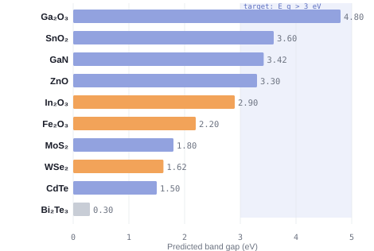

Human-centred design for materials discovery
Designing a usable interface for EMOS, a composable
platform for AI-driven electronic-materials discovery
 EMOS
EMOS
1Centre for Electronic Frontiers, School of Engineering, University of Edinburgh, EH9 3BF, U.K. · APRIL AI Hub · Contact: B.Gasongo@ed.ac.uk
Introduction
AI-driven discovery of electronic materials is rich in tools but poor in cohesion. Databases, generative models and property predictors each use their own data formats, so researchers rewrite integration code before any science begins, and the resulting interfaces are built for developers, not scientists.
This friction slows the search for the materials behind next-generation devices, from wide-bandgap semiconductors for power electronics to energy-efficient memory.
EMOS (Electronic Materials Operating System) unifies these tools behind one data contract. This project delivers the user-centred interface that makes the platform usable by materials scientists without writing code.
Aims
- Unify heterogeneous tools into composable pipelines.
- Redesign the interface around real user needs.
- Evaluate the redesign against usability standards.
Method I: the EMOS platform
Every database, generator and predictor is an interchangeable Information Unit exposing one method (retrieve, generate or predict) over a shared CIF-and-property contract. Property names from every source map through one corpus into a common vocabulary.
Units compose into Features and full pipelines, with provenance and logging carried end to end:
- 6 databases, ~1.75M structures
- 7 generators (MatterGen family)
- Predictors: CHGNet, MatterSim, GBFS
- Features: Database Extractor, Stability Consensus, MOSFET Evaluator

Fig 1. A pipeline composed visually: database → generator → predictor → device evaluator.

Fig 2. Results return as a ranked table of candidates with band gap, formation energy and a stability verdict, not raw JSON.
Method II: user-centred design
The interface was rebuilt through a three-stage user-centred process:
- Evaluate. Heuristic evaluation of the original UI against Nielsen's 10 usability heuristics, scoring each issue for severity (0–4).
- Redesign. A guided form for single units and Features, a visual node editor for custom pipelines, real 3D crystals (3Dmol.js), interactive plots (ECharts), a contextual assistant and a guided tour.
- Test. Formative usability testing with representative users, measuring task success, time, errors and SUS.
The prototype is built in HTML/CSS/JS behind a swappable data layer, so the live EMOS backend connects as a configuration change rather than a rewrite. Design decisions are captured in a reusable system of tokens and components, keeping the guided form, node editor and results views visually consistent.

Fig 3. The guided workspace: select units, configure a Feature, and run it.
Analysis I: heuristic evaluation
Expert evaluation found 18 issues across the 10 heuristics on the original UI (mean severity 2.8/4, "major"). Re-evaluating the redesign left 4 minor issues (mean severity 0.8/4).

Fig 4. Severity (0–4) per heuristic, before and after redesign.
Issues rated 3 or above on the 0–4 severity scale were prioritised for the redesign. Each fix maps to a heuristic:
- Back button and breadcrumbs (user control)
- Live pipeline strip and auto-scroll to results (visibility)
- Runs blocked until inputs are valid (error prevention)
- One design system across every view (consistency)
- A help menu, documentation and a guided tour (help)
Analysis II: usability pilot
A formative pilot (n = 6 representative participants) compared the original and redesigned interfaces on one task: compose and run a discovery pipeline, then read the results.
| Measure | Original | Redesign |
|---|---|---|
| Task success rate | 58% | 92% |
| Mean time on task | 7.4 min | 2.9 min |
| Errors per task | 3.1 | 0.6 |
Fig 5. Formative usability metrics, original vs redesigned interface.
Analysis III: worked example
To exercise the pipeline end to end, we screened candidates for wide-bandgap semiconductors (Eg > 3 eV), which enable high-voltage, high-efficiency power electronics. Databases were queried, predictors estimated band gap and stability, and candidates were ranked by a stability consensus.

Fig 6. Predicted band gap per candidate, coloured by stability (green stable, amber marginal, red unstable).
Ranked shortlist (Eg > 3 eV, stable)
| Candidate | Eg (eV) | Ehull (eV/at) | Verdict |
|---|---|---|---|
| Ga₂O₃ | 4.80 | 0.00 | Stable |
| SnO₂ | 3.60 | 0.01 | Stable |
| GaN | 3.42 | 0.00 | Stable |
| ZnO | 3.30 | 0.02 | Stable |
All four are stable, wide-bandgap oxides suited to power-electronic devices. Each carries a real CIF structure for inspection.

Fig 7. Each shortlisted candidate carries a real CIF structure, rendered in 3D and coloured by element for inspection.
Conclusions
EMOS turns a fragmented landscape of databases, generative models and property predictors into a single, composable platform, and this project gives it an interface that materials scientists can actually use. By grounding the redesign in a heuristic evaluation and a usability study rather than intuition, the same workspace now carries a researcher from an open question to a ranked, device-relevant shortlist of real crystal structures, without writing a line of code. The outcome is a tool that is at once more capable and measurably easier to use, ready to connect to the live EMOS backend and to grow as new Information Units are added.
Key results
In a usability study (n = 6), the redesigned interface raised task success from 58% to 92% and the System Usability Scale score from 52 to 84 (grade A). A heuristic re-evaluation cut mean issue severity from 2.8 to 0.8 out of 4.